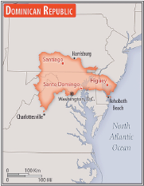

Introduction
Background
The Taino - indigenous inhabitants of Hispaniola prior to the arrival of Europeans - divided the island into five chiefdoms and territories. Christopher COLUMBUS explored and claimed the island on his first voyage in ; it became a springboard for Spanish conquest of the Caribbean and the American mainland. In , Spain recognized French dominion over the western third of the island, which in became Haiti.
The remainder of the island, by then known as Santo Domingo, sought to gain its own independence in but was conquered and ruled by the Haitians for 22 years; it finally attained independence as the Dominican Republic in . In , the Dominicans voluntarily returned to the Spanish Empire, but two years later they launched a war that restored independence in . A legacy of unsettled, mostly non-representative rule followed, capped by the dictatorship of Rafael Leonidas TRUJILLO from to .
Juan BOSCH was elected president in but was deposed in a military coup in . In , the US led an intervention in the midst of a civil war sparked by an uprising to restore BOSCH. In , Joaquin BALAGUER defeated BOSCH in the presidential election. BALAGUER maintained a tight grip on power for most of the next 30 years when international reaction to flawed elections forced him to curtail his term in .
Since then, regular competitive elections have been held in which opposition candidates have won the presidency. Former President Leonel FERNANDEZ Reyna (first term -) won election to a new term in following a constitutional amendment allowing presidents to serve more than one term, and was later reelected to a second consecutive term. Following the two-term presidency of Danilo MEDINA Sanchez (-), Luis Rodolfo ABINADER Corona was elected president in July .
Geography
Location
The Dominican Republic is located in the Caribbean, eastern two-thirds of the island of Hispaniola, between the Caribbean Sea and the North Atlantic Ocean, east of Haiti.
Area - comparative
Slightly more than twice the size of New Jersey.
Area comparison map:
Land boundaries
total: 376 km
border countries (1): Haiti 376 km
Natural resources
- nickel
- bauxite
- gold
- silver
- arable land
Economy
Economic overview
- Surging middle-income tourism, construction mining, and telecommunications OECS economy
- Major foreign US direct investment and free-trade zones
- Developing local financial markets
- Improving debt management
- Declining poverty
Real GDP (purchasing power parity)
| Year | GDP |
|---|---|
| $207.082 billion | |
| $184.447 billion | |
| $197.735 billion |
note: data are in dollars
comparison ranking: 66
GDP (official exchange rate)
The Dominican Republic's official exchange rate is that of $88.956 billion ( est.)
Industries
- tourism
- sugar processing
- gold mining
- textiles
- cement
- tobacco
- electrical components
- medical devices
Transnational Issues
Disputes - internationl
Haitian migrants cross the porous border into the Dominican Republic to find work; illegal migrants from the Dominican Republic cross the Mona Passage each year to Puerto Rico to find better work.
Refugees and internally displaced persons
Refugees (country of origin): 115,283 (Venezuela) (economic and political crisis; includes Venezuelans who have claimed asylum or have received alternative legal stay) ()
Stateless persons: 133,770 (); note - a Constitutional Court ruling revoked the citizenship of those born after to immigrants without proper documentation, even though the constitution at the time automatically granted citizenship to children born in the Dominican Republic and the constitution provides that constitutional provisions cannot be applied retroactively; the decision overwhelmingly affected people of Haitian descent whose relatives had come to the Dominican Republic since the 1890s as a cheap source of labor for sugar plantations; a law passed by the Dominican Congress regularizes the status of those with birth certificates but will require those without them to prove they were born in the Dominican Republic and to apply for naturalization; the government has issued documents to thousands of individuals who may claim citizenship under this law, but no official estimate has been released.
Illicit drugs
Major transshipment point for cocaine shipments to the United States and Europe in the Caribbean; some drugs are consumed locally.
Trafficking in persons
Tier rating: Tier 2 Watch List — the Dominican Republic does not fully meet the minimum standards for the elimination of trafficking but is making significant efforts to do so; more traffickers were convicted, two police officers were investigated for trafficking crimes, and cooperation with international law enforcement increased; officials identified more victims and implemented new protections for vulnerable domestic workers.
However, the government did not demonstrate overall increasing efforts, compared with the previous reporting period, to expand its anti-trafficking capacity; the government systemically and persistently failed to screen vulnerable migrant or undocumented populations, failed to refer victims to services, and did not provide these groups with justice in trafficking crimes; officials investigated and prosecuted fewer traffickers, did not adequately investigate labor trafficking cases involving migrants and children, and did not identify victims; the government did not adopt draft amendments to improve anti-trafficking laws, did not adequately fund or provide resources to anti-trafficking efforts, and did not complete a new National Action Plan; therefore, the Dominican Republic was downgraded to Tier 2 Watch List ().
Trafficking profile: human traffickers exploit domestic and foreign victims in the Dominican Republic, and victims from the Dominican Republic are exploited abroad; Dominican women and children, particularly from impoverished areas, were victims of sex trafficking throughout the Dominican Republic, the Caribbean, South and Central America, Europe, the Middle East, and the US; a study found family networks, social media recruiting, domestic servitude, inequality, gender-based violence, lack of information and education, and corruption were the primary causes of trafficking of Dominican women and girls in Costa Rica, Spain, and Switzerland.